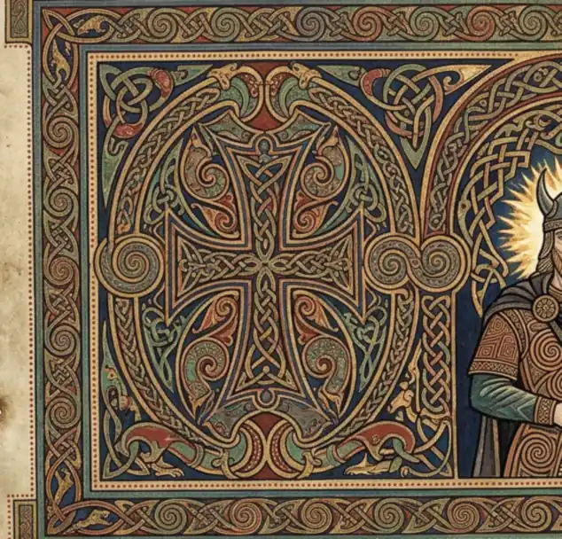
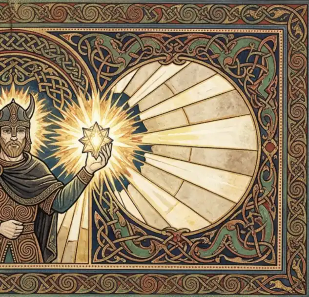
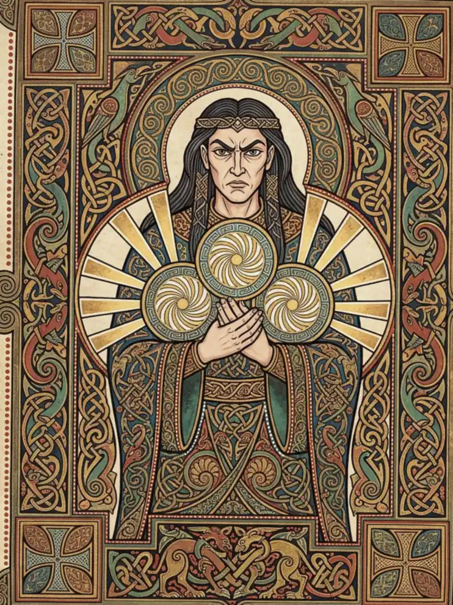
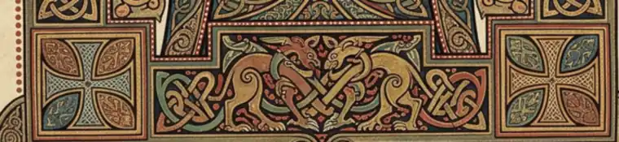
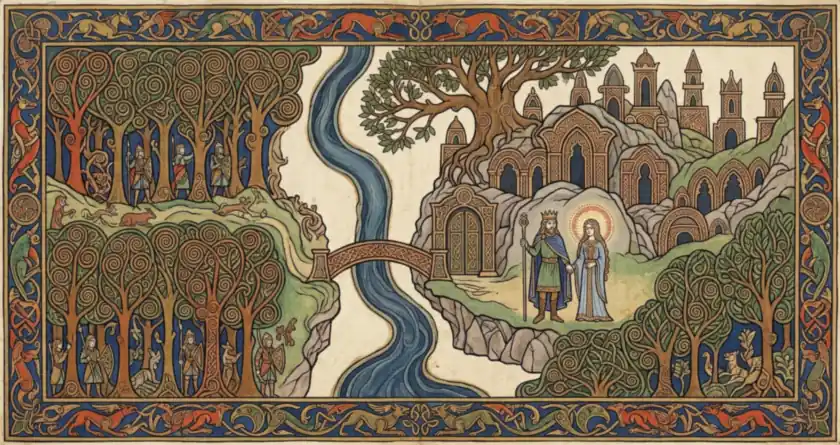
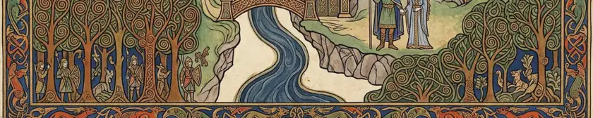
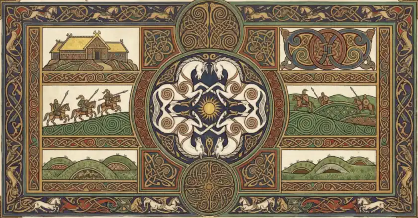
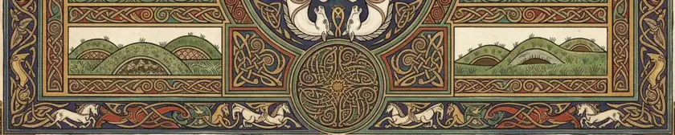

Peoples and Houses · Beren One-hand and the Silmarili

Beren One-hand and the Silmaril
SUPPLIED. The owner's plate, made with an AI tool, published on his own standing authorisation — on his word, not on a licence the file carries. The archive cropped, turned and recoloured it to this leaf. No generator is named: none was named to us. the archive's own record
A·iBeren
Volume III · The opening of this volumeii
Beren One-hand and the Silmaril
A 2:1 sheet with painted deckle edges and binding punch-holes at both outer margins. Left third: a cross-in-circle roundel of insular knotwork. Centre: a crowned figure in a spiral-worked tunic raising a radiant white star. Right third: a fan of pale gold rays inside a circle. No gutter fold (measured trough depth 16.7).
What the corpus attests
SCENE ATTESTED. Beren cuts a Silmaril from Morgoth's iron crown -- Silmarillion ch. 19, Of Beren and Luthien. THE FACE IS INVENTION: the corpus gives no description of Beren's features, and the crown he wears in this plate is not in the texts.
Why this volume
Volume III is Peoples and Houses -- 'who they were'. Beren holding the Silmaril is the moment two Houses become one: the marriage of Beren and Luthien is the root of the Half-elven and of every royal line the archive traces afterwards. No other plate stands at the head of so many genealogies.

From the same plate
SUPPLIED. The owner's plate, made with an AI tool, published on his own standing authorisation — on his word, not on a licence the file carries. The archive cropped, turned and recoloured it to this leaf. No generator is named: none was named to us. the archive's own record
A·ijContents
Peoples and Houses · Feanor and the Silmarilsiii

Feanor and the Silmarils
SUPPLIED. The owner's plate, made with an AI tool, published on his own standing authorisation — on his word, not on a licence the file carries. The archive cropped, turned and recoloured it to this leaf. No generator is named: none was named to us. the archive's own record
A·iijFeanor
Volume III · A great subject of this volumeiv
Feanor and the Silmarils
A portrait carpet leaf on cream vellum with a wide painted deckle. A double interlace border with four corner squares, each holding an equal-armed cross knot. At the centre a haloed dark-haired figure in a fillet holds three spiral-carved orbs against a gold sunburst. Warm ochre, teal and red.
What the corpus attests
MAKER AND MAKING ATTESTED, PORTRAIT INVENTED. Feanor wrought the three Silmarils -- Silmarillion ch. 7. The corpus gives no description of his face, and the crown, the halo and the three spiral-carved orbs held against a sunburst are the plate's composition, not the text's.
Why this volume
Volume III is Peoples and Houses. Feanor is the greatest of the Noldor and the cause of their sundering: the Oath, the Kinslaying and the exile are the reason there are Houses in Beleriand at all. If any single subject earns a carpet page in the volume of peoples, it is the one whose act divided them.

From the same plate
SUPPLIED. The owner's plate, made with an AI tool, published on his own standing authorisation — on his word, not on a licence the file carries. The archive cropped, turned and recoloured it to this leaf. No generator is named: none was named to us. the archive's own record
A·ivContents
Peoples and Houses · Doriath: Thingol and Melian within the Girdlev

Doriath: Thingol and Melian within the Girdle
SUPPLIED. The owner's plate, made with an AI tool, published on his own standing authorisation — on his word, not on a licence the file carries. The archive cropped, turned and recoloured it to this leaf. No generator is named: none was named to us. the archive's own record
A·vDoriath:
Volume III · A great subject of this volumevi
Doriath: Thingol and Melian within the Girdle
A landscape leaf split by a blue river with a knotwork bridge: dense spiral-crowned trees and small armed figures at the left, and at the right a crowned man with a staff beside a haloed woman, before rock-cut doorways under a great spreading tree.
What the corpus attests
THE KING, THE QUEEN AND THE GUARDED WOOD ARE ATTESTED; THE FACES ARE INVENTED. Thingol and Melian rule Doriath, and the Girdle of Melian is Tolkien's own name for the enchantment that fenced it. The corpus describes neither face; the crowns, the halo and the garments here are the plate's.
Why this volume
Volume III is Peoples and Houses -- 'who they were'. The crowned king and the haloed queen stand at the CENTRE of this plate and the forest is the frame around them; the marchwardens among the trees are their people. A picture whose middle is a royal pair is a picture of a house, and that is why it is not in Volume I with the other woods.

From the same plate
SUPPLIED. The owner's plate, made with an AI tool, published on his own standing authorisation — on his word, not on a licence the file carries. The archive cropped, turned and recoloured it to this leaf. No generator is named: none was named to us. the archive's own record
A·vjContents
Peoples and Houses · Rohan, the Riddermark: the horse, the rider and the moundsvii

Rohan, the Riddermark: the horse, the rider and the mounds
SUPPLIED. The owner's plate, made with an AI tool, published on his own standing authorisation — on his word, not on a licence the file carries. The archive cropped, turned and recoloured it to this leaf. No generator is named: none was named to us. the archive's own record
A·vijRohan,
Volume III · A great subject of this volumeviii
Rohan, the Riddermark: the horse, the rider and the mounds
A landscape leaf in green and cream: a central roundel of four white horses interlaced about a gold sun, with six framed panels around it holding the gold-roofed hall, mounted spearmen, green downland and two rows of grave-mounds. Small white horses run through the border.
What the corpus attests
THE MARK, ITS RIDERS AND ITS MOUNDS ARE ATTESTED; THE EMBLEM IS INVENTED. The Riddermark is Tolkien's own name, the barrows before Edoras are his, and so is the simbelmyne that grows on them. The four-horse roundel at the centre is this plate's device and appears nowhere in the corpus.
Why this volume
Volume III is Peoples and Houses. This plate is the PEOPLE and not their town: four horses knotted about a sun at the centre, riders on the wold, and -- the detail that settles it -- the barrows of their dead in two of the panels. The hall appears here only as a thumbnail; it has its own plate in Volume I.

From the same plate
SUPPLIED. The owner's plate, made with an AI tool, published on his own standing authorisation — on his word, not on a licence the file carries. The archive cropped, turned and recoloured it to this leaf. No generator is named: none was named to us. the archive's own record
A·viijContents
The Arda Archive · Peoples and Housesix
Peoples and Houses
Who they were. This volume opens at folio i and runs to folio mcmxxxii: 966 leaf-openings in 5 parts, of which 961 are a record of one person, place or realm.